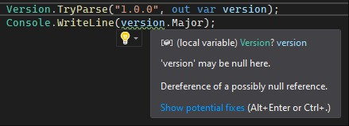
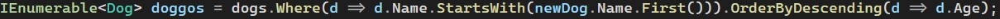
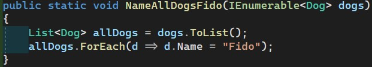
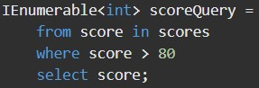
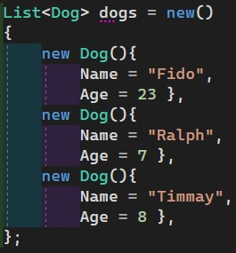
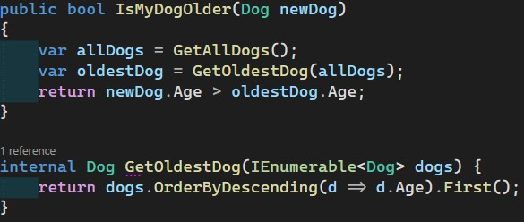
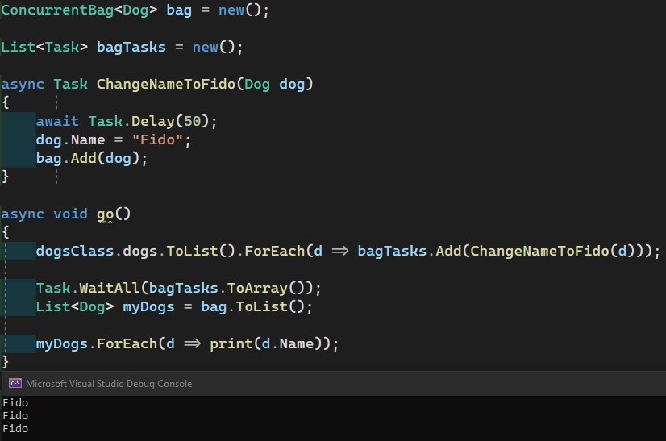

The easiest way to do a comparison is via the == or != operators. This works for any primative type, which is to say for anything number-based. Comparisons involving strings or other objects are more involved.
String comparisons should always be done using the string extension method .Equals. Depending upon the scenario, it's often a best practice to do something like this: string1.Equals(string2, StringComparison.OrdinalIgnoreCase) so that the comparison removes concerns about casing. Mind you, this solution does have its faults as case is truly meaningful in various non-western languages.
Booleans have their own special uses in that a simple if (myBoolean) or if (!myBoolean) suffices. Though use of the ternary operator is common in front end development, in back end it is much less so.
Comparing objects gets more complex and requires an override of the virtual method provided by "IEquatable" called "Equals". In essence, you can only compare one field with one other field at any given time, so comparing two objects means validating each field within that object is identical or similar verification. Here's a great StackOverflow answer on the topic.
Switch Expressions
A typical switch statement involves the switch (variable) declaration. Switch Expressions are new in

Dereference of a possibly null reference = Microsoft speak for "it could be null, bro"
Nullability in C# is denoted by the ?. int? beyond being an int32 is also nullable. It is not common for primatives to be made nullable (the numeric ones default to a value equal to 0, bool defaults to false which is 0 in binary). Getting rid of nullability is important for clean code execution.
Handling Nullable Reference Types
Nulls can be useful. They tell us when an operation failed. In order for an object to not be nullable it must be declared upon instantiation. This means it must be either defined immediately (even if it's just string.Empty), be assigned in that object's constructor, or new with .NET 7, it must be declared as "required" and a part of an incoming API.
Dereference of a possibly null reference = Microsoft speak for "it could be null, bro"
Nullability in C# is denoted by the ?. int? beyond being an int32 is also nullable. It is not common for primatives to be made nullable (the numeric ones default to a value equal to 0, bool defaults to false which is 0 in binary). Getting rid of nullability is important for clean code execution.
The simplest comparison one can make is xyz == null (or !=). This works in every circumstance. Another way is called the null coalescing operator. It has two varieties: return xyz ?? optionIfXyzIsNull where "xyz" would be evaluated and returned if it is not null, but if it is null then optionIfXyzIsNull would be returned. The other variety is the xyz ??= optionIfXyzIsNull where if xyz is not null it maintains its value, whereas if it is null then whatever default you have optionIfXyzIsNull set to will then be assigned to xyz.
The final scenario is how to handle null checks within LINQ statements. They're a pain. I've found the best solution to involve the use of the basic ? operator along with the ?? and a default return, for instance:
firstName = customers.FirstOrDefault(c => c.Name.Equals(customerName, StringComparison.OrdinalIgnoreCase))?.FirstName ?? "New User". Were that just a .First() it could fail with an exception if none is found, but .FirstOrDefault() will return null if it fails, as such we mark its result as being nullable. Because of this, we also have to handle it and thus add the null coalescing operator with a default to fall back to in that scenario. The result is that "firstName" is not nullable as the result of this function will always be assigning a proper value to firstName, even if it is only "New User".
IEnumerables
All collections in C# such as Lists, Dictionaries, and Arrays, are IEnumerables. This means that they inherit from the IEnumerable class. Arrays and Lists have a .Sort() method, but because of the dual nature of Dictionaries, it won't know whether you want to sort it based upon the Key or the Value... and if your Array or List is of objects instead of numbers or strings, it won't know what to sort by. This is easily solved by using IEnumerable's OrderBy() method such as .OrderBy(x => x.Name).

doggos by first letter of name sorted by age
All LINQ statements return IEnumerables. I feel like they might as well just return List, but there must be a difference under the hood. Because of the prevalence of LINQ in C# IEnumerables are very common and thus generally preferred when working with data. They're also immutable, which is a valuable property when doing data manipulation, allowing you to maintain the fidelity of the source while extracting what you need.
IEnumerables - Altering Values
IEnumerables are immutable so nothing can be added to or removed from it. In order to remove or add items, the variable must be assigned to a new collection such as: dogs = dogs.Where(d => d.Age > 7);. The Where filters out dogs under the age of 7 and returns a new IEnumerable. In order to alter the list, we have to assign it to the results of that calculation.
Although it is not possible to alter the contents of an IEnumerable, if the items inside it are complex objects (not strings or any of the other primative types), then they are pass-by-reference. When a pass-by-reference object has its value updated, it's value is updated across the board. As such, you may update their values in a subsequent list and see those results in the original IEnumerable:

all doggos shall henceforth known by the name "Fido"
Note that the method in the preceding example has a void return value and doesn't return the subsequent allDogs list. Despite this, printing out the names of each Dog in the IEnumerable<Dog> confirms that the name of each Dog does in fact update to "Fido", despite the name assignment being done while iterating the List<Dog>.
LINQ
Though we learned the for (int i = 0; i < object.length; i++) in school, it is not often used in production C# code. This is due to the ease of use, and thus prevalence, of LINQ statements. LINQ comes in two forms: method-based query and query expressions.
Method-Based Query: As seen in the IEnumerable section above, chained statements look similar to promises and lambdas in JavaScript. This is the most common way to iterate over a collection of objects. The most commonly used ones are .Where() .Select() .OrderBy() .Any() .All() .Contains() .Count(). The full list of available methods may be found on the MS documentation site. Note: it is best-practice that when a query involves more than 2 methods, each method is placed on its own line for legibility's sake.
Query Expressions use actual SQL-like syntax in C# to accomplish the task:

SQL variety of LINQ
You may find the keywords on the MS documentation site as well. I don't have much experience with this type of syntax, preferring the method-based query.
Object Instantiation
Sometimes it is preferable to build a specific constructor for a more complex object that involves various sub-types... but for simple objects it is preferable to simply declare it as a basic class with parameters (or maybe even as a record) without an explicit constructor. Doing so allows for the instantiation of any object (Lists and Dictionaries included) to be done via a simple new Type(){MyParameter = myValue} syntax.

Object Initialization Syntax
Writing Code That Is Easy To Test
The primary concept to keep in mind is that you don't want to test the language itself, but your implementation of it. This means things like null handling or when an endpoint might receive an invalid option for an Enum. Most tests, however, will be created to either validate that a method returns what we expect it to for some predetermined parameters, or to ensure that a bug that was encountered never happens again.
The simplest thing to do here is to create your code as building blocks to your goal. Console apps are forced into using the Main method to execute their tasks. Generally speaking, that pattern applies here: if you are working inside a behemoth of a method due to it driving the functionality of that particular domain, making your new task be a simple method call inside that one may make it much more legible... then within that method (let's call it "GetMoreStuffDone()"), you make one data manipulation, then call to three brand new methods that you just created... You would create those new methods because they're caring for the smaller tasks that are necessary along the way to meet your goal. Doing it in this manner will allow you to test more easily as you can validate each method individually if need be.

Can I get a 'Woof Woof'!
In the above example, the GetAllDogs() method is just returning a list and does not need tested. GetOldestDog, however, doesn't just do a LINQ query, it also relies explicitly upon the Dog object having an Age field. As a result, it may be worth testing simply to validate that the field type doesn't change to something that cannot be sorted properly and that it continues to exist by the name Age. Lastly, IsMyDogOlder should absolutely be tested as it relies on a separate list, a different method, and does its own calculation. It'd be easy enough to put all of this inline in the parent method, but doing it this way makes it both easier to test and available for potential reuse in the future.
One last thing to note: testing IsMyDogOlder is a very simple matter since the method is public. The GetOldestDog method, however, is not so simple. Internal is an access type that is accessible to the same assembly. Not only that, but one may set their project's AssemblyInfo.cs file to make [assembly: InternalsVisibleTo("another assembly")]. That other assembly is generally the test project, making this otherwise private method available for your test project to access for testing purposes.
Multithreading in C# is pretty straight forward. There are several things to consider along the way, however: 1) will you be making alterations to the same object multiple times? 2) should I even bother?
Should I Build In Multithreading: In modern computing it is generally not necessary. Most hosting scenarios are sufficiently powerful that though it be available, there's no real need to take advantage of multithreading. The cases in which it is of value is when it is a fairly expensive or time consuming process, for instance if you call to an external API multiple times in order to accomplish your greater task then sending all of those calls out at once would allow you to truncate the wait from however many down to just the time it takes to make one call as they happen concurrently.
Handling Object Alterations: If you are modifying the same object with each iteration (for instance, adding or removing an item from a list) then it suddenly becomes critical that your list is thread-safe. This is generally accomplished with a ConcurrentBag which is a collection that is designed precisely for this purpose.

Dogs in a bag.. not the best idea.
There is a way to explicitly call out the number of threads to be utilized, which is important to declare in some multithreading approaches. To manage the number of threads, Parallel.MaxDegreeOfParallelism should be incorporated.